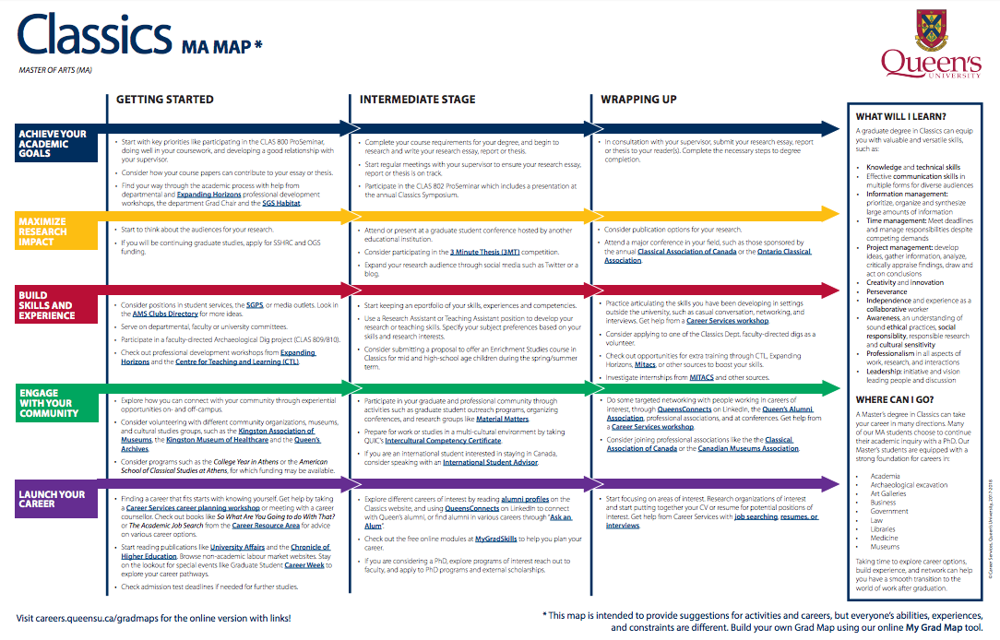
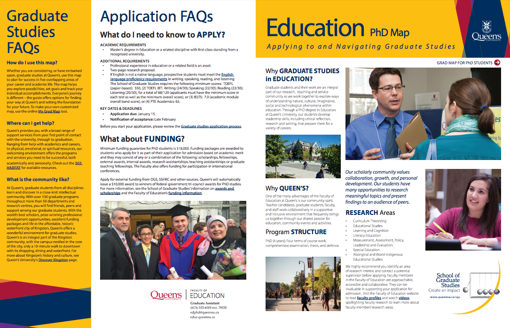
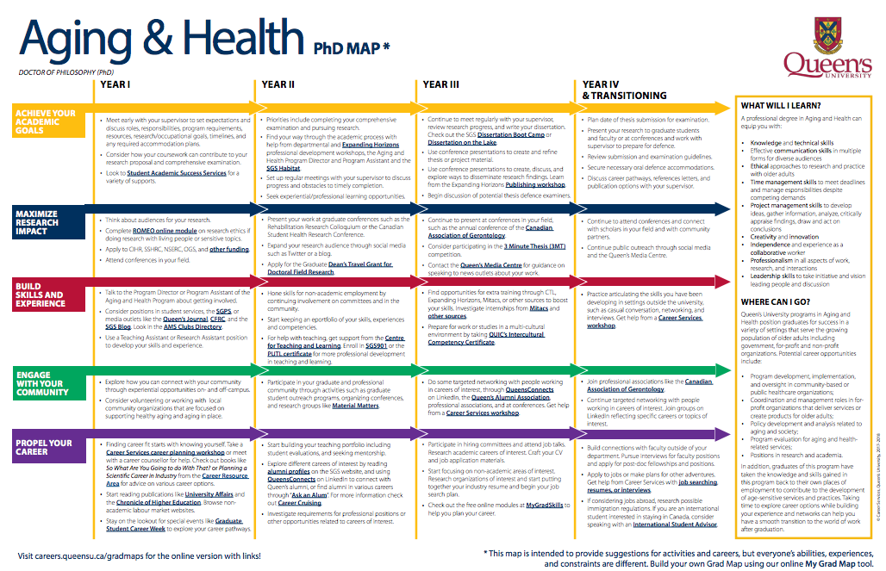
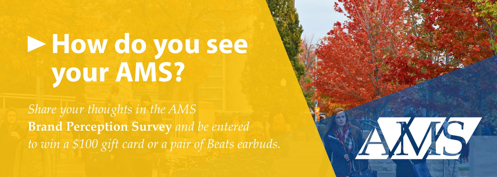
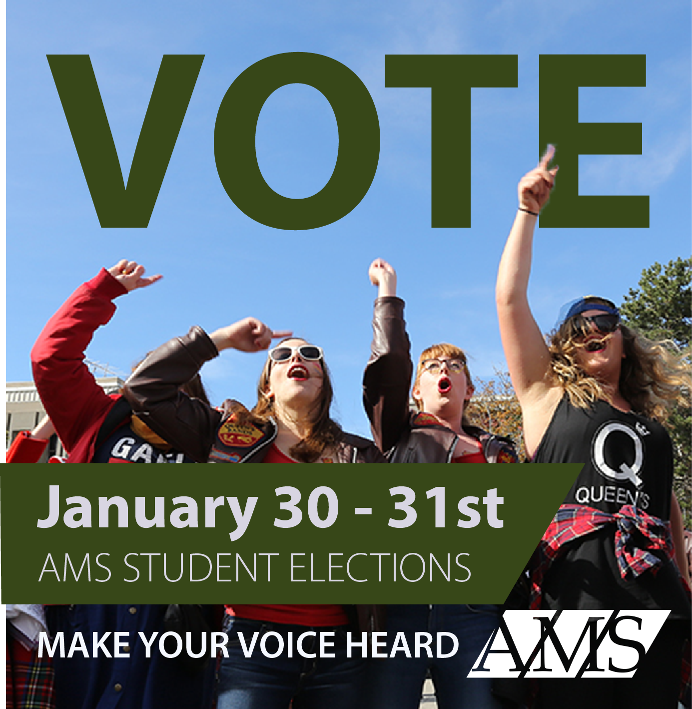
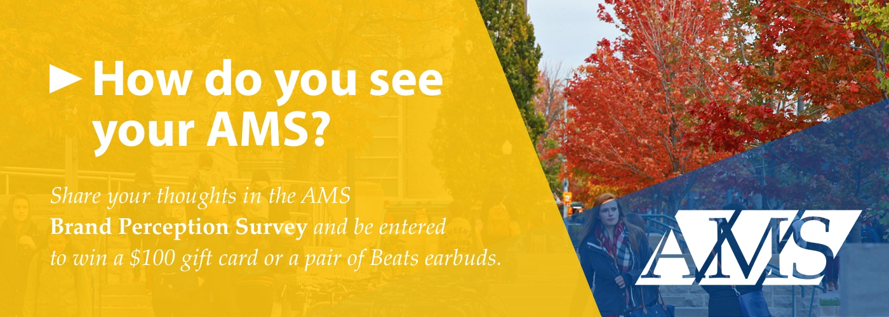
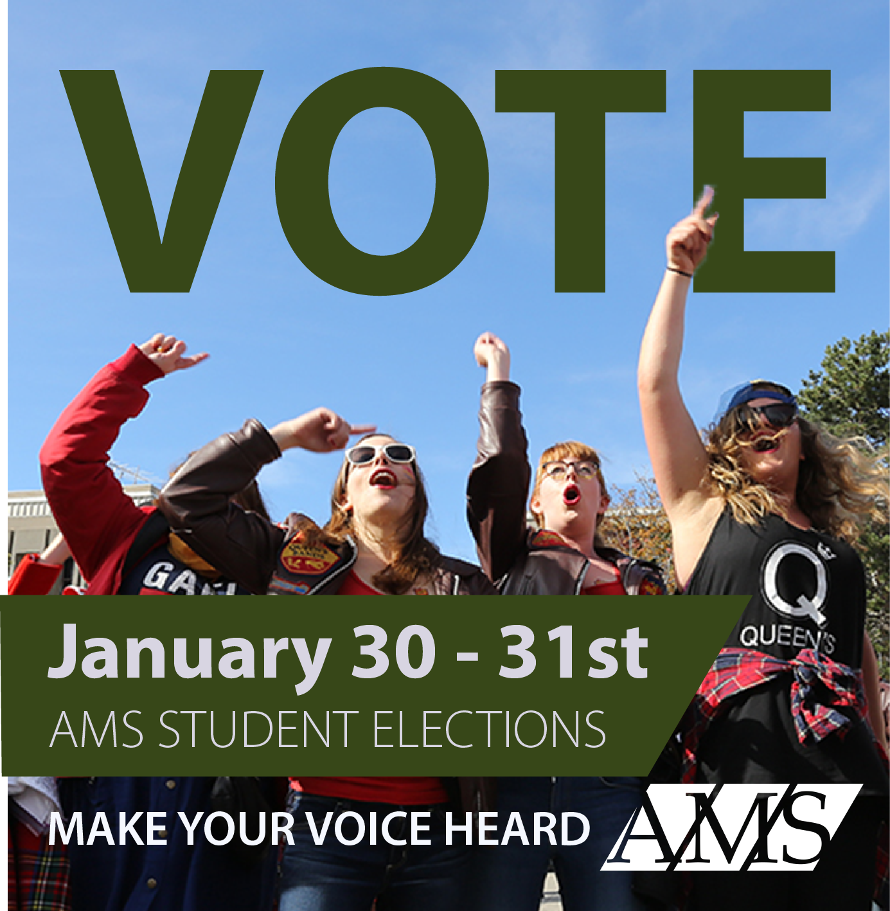

I joined Career Services at Queen's University in September 2016 to redesign and launch new grad maps- a marketing document and guide for students through the academic, extra curricular, and career choices they face taking graduate degree.

The Premise
Gathering information about all the programs that a university offers is time-consuming. The solution is to create an abbreviated document for each program with program outcomes, career prospects, and admissions requirements. To expand its use case, current students can also refer to the maps to get actions they can take to enhance academic, experiential, and professional aspects of their degree.

My Role
Everyone wants their space on 88 grad maps. Departments want the maps to sing praises about their programs, Career Services wants a bigger career prospects and employability skills column, and the University wants them to fit with their visual identity. I built and maintained relationships with over 50 different stakeholders and designed the new maps with all their constraints. I finished by publishing them online using basic HTML.

Takeaways
The Major Maps, the predecessor which the Grad Maps are modelled after, recently won a Canadian Association of Career Educators and Employers award for Excellence in Student Engagement. The design thinking in creating these maps was to make them useful for current students looking to make their education more well rounded alongside being used for marketing purposes and it paid off- more than 88% of current students find them useful for informing their degree decisions.
It's expensive to find transportation between cities. The best trade-off university students have made to work around costly train tickets is to carpool. The existing medium for this interaction is in a Facebook group, where the upside is that everybody already has a verified identity account, but the downside is that Facebook does not have the ecommerce tools to sort and filter products.
Using design thinking principles, we developed a rideshare platform that borrows Facebook's biggest advantages and builds on its weaknesses. Users sign in with their Facebook accounts and they are ready to begin using the platform. We've added simple search and filter-by-date functionality so users don't have to go digging for rides.
Product Management
I'm leading a team of two developers that are hard at work building the final product. We have gone through branding sprints, written a problem statement, and released a mailing list for anyone to sign up and receive updates when we release.
My job was to develop interesting graphics for social media while maintaining a strong brand identity (hello, font limitations!). I was nominated as the AMS's Volunteer of the Year for my work.
Chief Information Officer at Queen's Commerce Society
Overview
Every spiffy website has a novice web developer at the helm doing odd jobs for upkeep. This was the case for my first go at running a commercial website with 2 dozen subdomains. Documents had to be updated, pages added and restructured, security measures kept up to date (we got hacked), andbanners designed for the home page (example below).
My Role
I worked with all members of the Commerce Society who were looking to have their initiatives published on the website, and configured domains for all the student clubs that operated within the Commerce Society. As a fun bonus, I designed MailChimp newsletters to send out to the entire Commerce student body.

 


